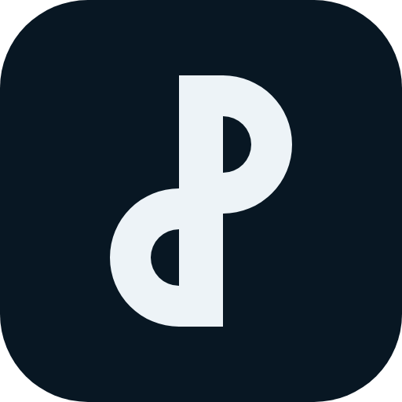

1 · Giro
Dos P que comparten el asta y giran media vuelta. Dice tres cosas sin dibujar nada literal: P de Pipos, dos personas y un ciclo (la constancia de cada semana). La simetría por giro la hace memorable: se reconoce del revés, en negativo y a 16 px queda una forma de «S» firme que no se confunde con las letras de otras apps. Es la que propongo para la app.
Lo que vigilar: no tiene nada de agua; la piscina queda solo en la interfaz. A 16 px se lee como una «S» con asta. No conozco ninguna marca con esta forma, pero no puedo comprobarlo contra todas: miradlo también vosotros antes de cerrarla.